| participant_ID | mean.acc | mean.self | study | AGE | SHIPLEY | HLVA | FACTOR3 | QRITOTAL | GENDER | EDUCATION | ETHNICITY |
|---|---|---|---|---|---|---|---|---|---|---|---|
| studyone.1 | 0.49 | 7.96 | studyone | 34 | 33 | 7 | 53 | 11 | Non-binary | Higher | White |
| studyone.10 | 0.85 | 7.28 | studyone | 25 | 33 | 7 | 60 | 11 | Female | Higher | White |
| studyone.100 | 0.82 | 7.36 | studyone | 43 | 40 | 8 | 46 | 12 | Male | Further | White |
| studyone.101 | 0.94 | 7.88 | studyone | 46 | 33 | 11 | 51 | 15 | Male | Higher | White |
| studyone.102 | 0.58 | 6.96 | studyone | 18 | 32 | 3 | 51 | 12 | Male | Secondary | Mixed |
| studyone.103 | 0.84 | 7.88 | studyone | 19 | 37 | 13 | 45 | 19 | Female | Further | Asian |
Week 7. Hypotheses and associations
Written by Rob Davies
7.1 Overview
Welcome to your overview of the work we will do together in Week 7.
This week, we focus on methods that allow us to make sense of the evidence for associations.
Looking ahead to your professional lives, our aim is to help you to build the understanding and to learn the skills that will ensure that you can practise, inspire and manage the most effective ways to make sense of associations.
We will work in the context of a live research project with potential real world impacts: the Clearly understood project. Working in a concrete context will help you to make sense of what you are doing, even if you are interested in other topics.
Tip
The Clearly understood project aims to fix the problem that we are not sure how health information should be communicated so that everyone can understand it.
We ask the research questions:
- What person attributes predict success in understanding?
- Can people accurately evaluate whether they correctly understand written health information?
As we work together, we will be revisiting some of the ideas and techniques you have seen in previous classes, so that you can consolidate your learning. Then, we will extend your development with some new ideas to strengthen your skills.
7.2 Our learning goals
This week, we develop your critical thinking and we strengthen your practical skills.
1. Critical thinking
- Concepts: how we go from ideas and questions to hypotheses
2. Practical skills
- Concepts – associations: correlations, estimates and hypothesis tests
- Skills – visualizing covariation
- Skills – writing the code
- Skills – estimating correlations
- Skills – hypothesis tests for correlations
- Skills – interpreting and reporting correlations
7.3 Learning resources
You will see, next, the lectures we share to explain the concepts behind the critical thinking and analysis skills you will develop, then you will see information about the practical materials you can use to practise your skills.
Tip
We think you will learn best if you first watch the lectures then do the practical exercises.
7.3.1 Lectures
The lecture materials for this week are presented in five short parts.
Click on a link and your browser should open a tab showing the Panopto video for the lecture part.
- Part 1 (12 minutes) Overview: The concepts and skills we will learn about in weeks 6-10, and why it helps to embed the classes in the context of a research project.
- Part 2 (18 minutes): Hypotheses, measurements and associations – how you can think critically.
- Part 3 (14 minutes): The live research project we will use to put our practical skills exercises and critical thinking challenges into context.
- Part 4 (20 minutes): Seeing, thinking and talking about associations, correlations.
- Part 5 (12 minutes): How we use R to estimate and test correlations. How we write about correlation results
7.3.2 Lecture slides
Download the lecture slides
The slides presented in the videos can be downloaded here:
- The slides exactly as presented (22 MB).
You can download the web page .html file and click on it to open it in any browser (e.g., Chrome, Edge or Safari). The slide images are high quality so the file is quite big and may take a few seconds to download.
We are going to work through some practical exercises, next, to stimulate your thinking and learn the practical skills you need to see, test and talk about correlation analyses of the associations between variables.
7.4 Practical materials: data and R-Studio
We will work with two data files which you can download by clicking on their names (below):
Once you have downloaded the files, you will need to upload them to the R-Studio server to access and use the R files.
Important
Here is a link to the sign-in page for R-Studio Server
7.4.1 Practical materials guide
You will find that the practical exercises are simpler to do if you follow these steps in order.
- The data — We will take a quick look at what is inside the data files so you know what everything means.
- The
how-toguide — We will go through the practical analysis and visualization coding steps, showing all the code required for each step. - The
practicalexercises — We will set out the tasks, questions and challenges that you should complete to learn the practical skills we target this week.
Tip
We show you how to do everything you need to do in the practical exercises, first, in the how-to guide.
- Start by looking at the
how-toguide to understand what steps you need to follow in the lab activity.
If you want to make it more challenging for yourself, go straight to Step 3.
We will take things step-by-step:
- different parts for different phases of the analysis workflow;
- different tasks for different things you need to do;
- different questions to examine different ideas or coding challenges.
7.4.1.1 The data files
Each of the data files we will work with has a similar structure.
Here are what the first few rows in the data file study.one.gen looks like:
Tip
The webpage has a slider under the data table window, so you can scroll across the columns: move your cursor over the window to show the slider.
When you look at the data table, you can see the columns:
participant_IDparticipant codemean.accaverage accuracy of response to questions testing understanding of health guidancemean.selfaverage self-rated accuracy of understanding of health guidancestudyvariable coding for what study the data were collected inAGEage in yearsHLVAhealth literacy test scoreSHIPLEYvocabulary knowledge test scoreFACTOR3reading strategy survey scoreGENDERgender codeEDUCATIONeducation level codeETHNICITYethnicity (Office National Statistics categories) code
7.4.2 The how-to guide
We will take things step-by-step.
We split .Rmd scripts by steps, tasks and questions:
- different parts for different phases of the analysis workflow;
- different tasks for different things you need to do;
- different questions to examine different ideas or coding challenges.
Tip
- Make sure you start and work your way, in order, through each part, task and question.
- Complete each task before you move on to the next task.
In the how-to guide, we hide example code and answer information in boxes so that you can test yourself first. Click on the box to then reveal the code or the answer.
7.4.2.1 How-to Part 1: Set-up
To begin, we set up our environment in R.
How-to Task 1 – Run code to empty the R environment
Tip
rm(list=ls()) How-to Task 2 – Run code to load libraries
Load libraries using library().
Tip
library("tidyverse")7.4.2.2 How-to Part 2: Load and examine the data
How-to Task 3 – Read in the data file we will be using
The code in the how-to guide was written to work with the data file:
study-one-general-participants.csv.
Read in the data file – using read_csv().
Tip
study.one.gen <- read_csv("study-one-general-participants.csv")
Tip
You can choose your own file name, but be sure to give the data-set a distinct name, e.g., study.one.gen so that R can distinguish between the different data you will work with.
How-to Task 4 – Inspect the data file
Use the summary() function to take a look.
Tip
summary(study.one.gen) participant_ID mean.acc mean.self study
Length:169 Min. :0.3600 Min. :3.440 Length:169
Class :character 1st Qu.:0.7600 1st Qu.:6.080 Class :character
Mode :character Median :0.8400 Median :7.080 Mode :character
Mean :0.8163 Mean :6.906
3rd Qu.:0.9000 3rd Qu.:7.920
Max. :0.9900 Max. :9.000
AGE SHIPLEY HLVA FACTOR3
Min. :18.00 Min. :23.00 Min. : 3.000 Min. :34.00
1st Qu.:24.00 1st Qu.:33.00 1st Qu.: 7.000 1st Qu.:46.00
Median :32.00 Median :35.00 Median : 9.000 Median :51.00
Mean :34.87 Mean :34.96 Mean : 8.905 Mean :50.33
3rd Qu.:42.00 3rd Qu.:38.00 3rd Qu.:10.000 3rd Qu.:55.00
Max. :76.00 Max. :40.00 Max. :14.000 Max. :63.00
QRITOTAL GENDER EDUCATION ETHNICITY
Min. : 6.00 Length:169 Length:169 Length:169
1st Qu.:12.00 Class :character Class :character Class :character
Median :13.00 Mode :character Mode :character Mode :character
Mean :13.36
3rd Qu.:15.00
Max. :19.00
Tip
summary()will give you either descriptive statistics for variable columns classified as numeric or will tell you that columns in the dataset are not numeric.summary(...)is a function and, again, you put the name of the dataset inside the brackets to view it.
Q.1. What is the mean of
mean.acc?
Tip
A.1. 0.8163
Q.2. What class is the variable
study?
Tip
A.2.
character
Q.3. Does the summary indicate if any variable has missing values (
NA)?
Tip
A.3. No
How-to Task 5 – Change the class or type of a variable
You can use the as.factor() function you used in Week 5.
Tip
study.one.gen$study <- as.factor(study.one.gen$study)Q.4. After you have done this, what information does
summary()give you about the variablestudy?
Tip
A.4. We can see the number 169 beside the word
studyone: this tells us that there are 169 observations, in the column, each one is a value: the word or character stringstudyone.
Tip
Remember from Week 3 that we can only count how many times a category value (or factor level) occurs: here, we are counting how many times the word studyone occurs in the factor column study.
7.4.2.3 How-to Part 3: Visualize associations
How-to Task 6 – Draw scatterplots to examine associations between variables
You have seen these code moves before, in previous classes (weeks 3 and 4): we are consolidating skills by practising your coding in different contexts, using different data.
We extend your skills by adding some new moves.
Create scatterplots to examine the association between some variables.
Tip
We are working with geom_point() and you need x and y aesthetic mappings.
For example, we can draw a scatterplot to examine the association between mean.self and mean.acc.
ggplot(data = study.one.gen, aes(x = mean.self, y = mean.acc)) +
geom_point()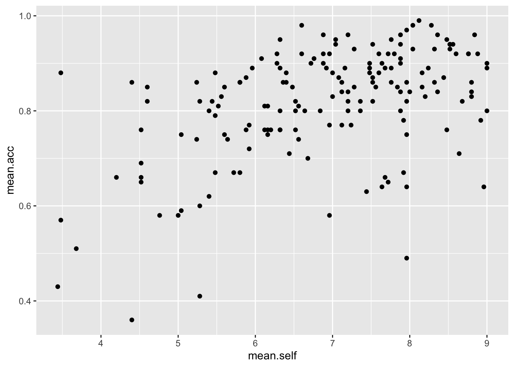
Examine this plot — it shows: the possible association between x-axis variable mean.self and y-axis variable mean.acc.
You have seen this kind of code before but it will help your learning if, now, we take a look at the code step-by-step.
The plot code moves through the following steps:
ggplot(...)makes a plot.ggplot(data = study.one.gen, ...)uses thestudy.one.gendata-set.ggplot(...aes(x = mean.self, y = mean.acc))uses two aesthetic mappings.geom_point()show the mappings as points.
Tip
What are aesthetic mappings?
Aesthetic mappings translate data information – numbers or values in column variables – into things you can see in plots.
For a scatterplot, we need to translate values for two variables into the position of each point in the plot.
Here:
x = mean.selfmapsmean.selfvalues to x-axis (horizontal, left to right) positions.y = mean.accmapsmean.accvalues to y-axis (vertical, bottom to top) positions.
Now do scatterplots with any pair of numeric variables you like.
Remember that we saw with summary() that not every variable consists of numbers.
Tip
Check out the example code.
ggplot(data = study.one.gen, aes(y = mean.self, x = mean.acc)) +
geom_point()
ggplot(data = study.one.gen, aes(x = AGE, y = mean.self)) +
geom_point()
ggplot(data = study.one.gen, aes(x = SHIPLEY, y = mean.self)) +
geom_point()
ggplot(data = study.one.gen, aes(x = HLVA, y = mean.self)) +
geom_point() How-to Task 7 – Edit the scatterplots to change how they look
Edit the appearance of a plot step-by-step.
We are going to edit:
- the appearance of the points using alpha and size;
- the colour of the background using
theme_bw(); - the appearance of the labels using
labs().
We make the changes, one change at a time.
You have seen one of these moves before and you can guess at how to do the others. Click on the drop-down view to see the code but, if you want a challenge, try first to write the code on your own.
- the appearance of the points using alpha and size
Code
ggplot(data = study.one.gen, aes(x = HLVA, y = mean.self)) +
geom_point(alpha = 0.5, size = 2) 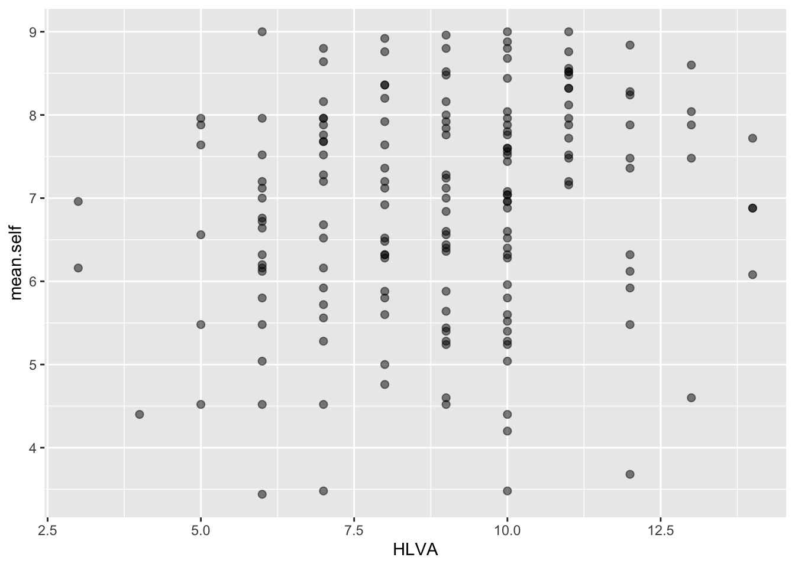
- the colour of the background using
theme_bw()
Code
ggplot(data = study.one.gen, aes(x = HLVA, y = mean.self)) +
geom_point(alpha = 0.5, size = 2) +
theme_bw()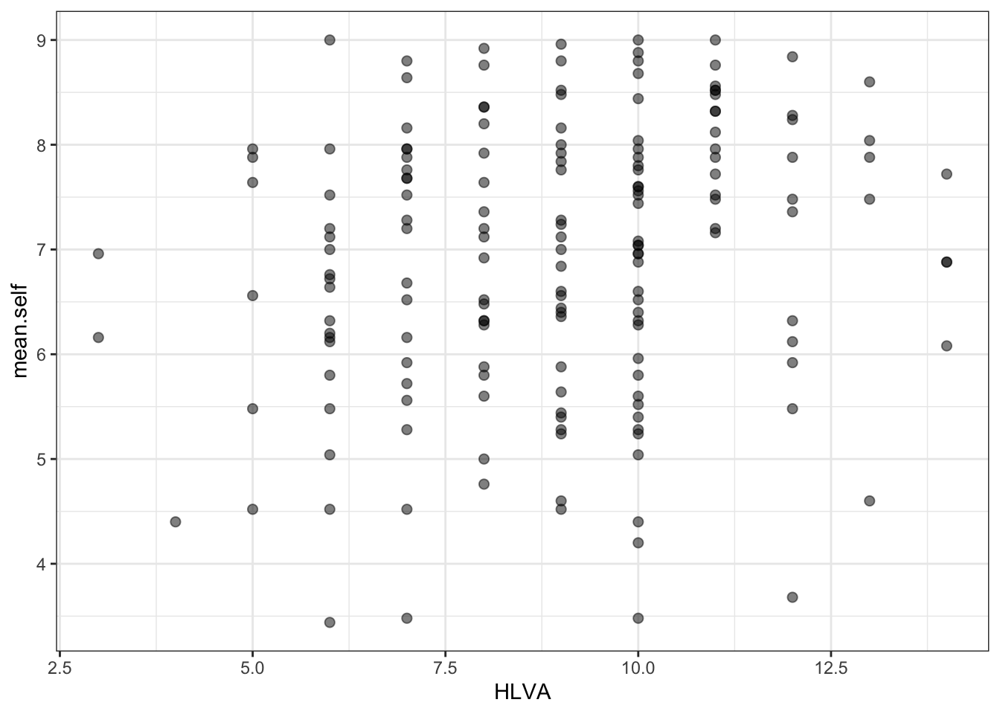
- the appearance of the labels using
labs()
Code
ggplot(data = study.one.gen, aes(x = HLVA, y = mean.self)) +
geom_point(alpha = 0.5, size = 2) +
theme_bw() +
labs(x = "HLVA", y = "mean self rated accuracy")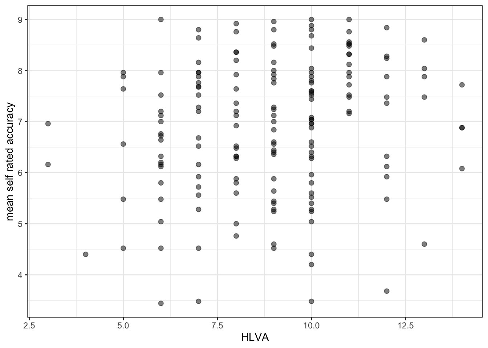
Tip
The arguments alpha and size can change the appearance of most geometric objects (geoms) in ggplot:
- in the code example, here, we vary the
alphanumber to change how opaque or transparent the points are; - and we vary the size number to vary the size of the points.
How-to Task 8 – Now experiment
There are no right answers here: edit the appearance of your plots by changing alpha, size and colour of points.
Tip
Play is an important part of learning.
- Experimenting with how plots look is a key element in becoming a master at data visualization. You won’t know what looks good to you unless you try different things.
If you really want to extend your skills, it is really important that you learn how to find useful online help.
Q.5. Can you find the ggplot reference page on scatterplots?
Hint
Do a search with the keywords: ggplot reference geom_point
Answer
A.5. You can find reference information here: https://ggplot2.tidyverse.org/reference/geom_point.html
Q.6. Can you change the colour of the points to a colour you like?
Hint
Do a search with the keywords: ggplot colours.
Useful information on colour can be found here:
https://r-graphics.org/recipe-colors-setting
or
Answer
A.6. Here is how you do it: R will recognize many English colour names.
ggplot(data = study.one.gen, aes(x = HLVA, y = mean.self)) +
geom_point(alpha = 0.5, size = 2, colour = "hotpink") +
theme_bw() +
labs(x = "HLVA", y = "mean self rated accuracy")
Important
Now you: experiment!
7.4.2.4 How-to Part 4: Analyse associations
How-to Task 9 – Use correlation to to answer a research question
Examine associations between variables using correlation.
One of our research questions is:
- Can people accurately evaluate whether they correctly understand written health information?
We can answer this question by examining whether mean self-rated accuracy of understanding correlates with mean accuracy of understanding. The logic is that if we can accurately rate our own understanding (from bad to good) then that rating should be associated – should be correlated with – how accurately we can actually respond to questions that test that understanding.
Q.7. How do we examine the correlation between mean self-rated accuracy (
mean.self) and mean accuracy (mean.acc)?
Hint
Remember from the Week 6 lecture, that we use cor.test():
Can you figure out how to code a correlation test? It helps with your learning if you first try to anticipate what the code will look like. Then reveal the code, below, to see what you guessed right. (Getting some things right, and some things wrong, is part of the learning process.)
Code
A.7. Here is how you do it: take a look at the code and the results of the correlation test.
cor.test(study.one.gen$mean.acc, study.one.gen$mean.self, method = "pearson", alternative = "two.sided")
Pearson's product-moment correlation
data: study.one.gen$mean.acc and study.one.gen$mean.self
t = 7.1936, df = 167, p-value = 2.026e-11
alternative hypothesis: true correlation is not equal to 0
95 percent confidence interval:
0.3619961 0.5937425
sample estimates:
cor
0.4863771 Q.8. What is r, the correlation coefficient?
Answer
A.8. r = 0.4863771
Q.9. Is the correlation significant?
Answer
A.9. r is significant
Q.10. What are the values for t and p for the significance test for the correlation?
Answer
A.10. t = 7.1936, p = 2.026e-11
Q.11. What do you conclude, given the correlation results?
Hint
Review the scatterplot you drew earlier (or draw one now) to examine the shape of the association between these variables.
Answer
A.11.
mean.accandmean.selfare positively correlated suggesting that as #mean.accscores increase so also domean.selfscores
7.4.3 The practical exercises
Now you will progress through a series of tasks, and challenges, to test what you have learnt.
Warning
Now we will work with the data file
study-two-general-participants.csv
We again split the steps into into parts, tasks and questions.
We are going to work through the following workflow steps:
- Empty the R environment
- Load relevant libraries
- Read in the data file
- Inspect the data
- Change the type classification of variables if necessary
- Draw scatterplots to visualize the association between pairs of variables
- Estimate and test the correlations between pairs of variables
Tip
- The
how-toguide showed you what functions you needed and how you should write the function code. - Use the code structure you have seen and change it to use the data required for these
practical exercises: you will need to change the data-set name, the variable names, to get the code to work for the following exercises. - In learning how to code, the process of adapting example code is a key skill: we are learning what can change, and what has to stay the same.
In the following, we will guide you through the tasks and questions step by step.
Important
An answers version of the workbook will be provided after the practical class.
7.4.3.1 Practical Part 1: Set-up
To begin, we set up our environment in R.
Practical Task 1 – Run code to empty the R environment
rm(list=ls())Practical Task 2 – Run code to load relevant libraries
library("tidyverse")7.4.3.2 Practical Part 2: Load the data
Practical Task 3 – Read in the data file we will be using
The data file for the practical exercises is:
study-two-general-participants.csv
Use the read_csv() function to read the data file into R.
Code
study.two.gen <- read_csv("study-two-general-participants.csv")Rows: 172 Columns: 12
── Column specification ────────────────────────────────────────────────────────
Delimiter: ","
chr (5): participant_ID, study, GENDER, EDUCATION, ETHNICITY
dbl (7): mean.acc, mean.self, AGE, SHIPLEY, HLVA, FACTOR3, QRITOTAL
ℹ Use `spec()` to retrieve the full column specification for this data.
ℹ Specify the column types or set `show_col_types = FALSE` to quiet this message.When you code this, you can choose your own file name, but be sure to give the data object you create a distinct name e.g. study.two.gen.
Practical Task 4 – Inspect the data file
Use the summary() or head() functions to take a look
Code
summary(study.two.gen) participant_ID mean.acc mean.self study
Length:172 Min. :0.4107 Min. :3.786 Length:172
Class :character 1st Qu.:0.6786 1st Qu.:6.411 Class :character
Mode :character Median :0.7679 Median :7.321 Mode :character
Mean :0.7596 Mean :7.101
3rd Qu.:0.8393 3rd Qu.:7.946
Max. :0.9821 Max. :9.000
AGE SHIPLEY HLVA FACTOR3
Min. :18.00 Min. :23.00 Min. : 3.000 Min. :29.00
1st Qu.:25.00 1st Qu.:32.75 1st Qu.: 7.750 1st Qu.:47.00
Median :32.50 Median :36.00 Median : 9.000 Median :51.00
Mean :35.37 Mean :35.13 Mean : 9.064 Mean :51.24
3rd Qu.:44.00 3rd Qu.:39.00 3rd Qu.:11.000 3rd Qu.:56.25
Max. :76.00 Max. :40.00 Max. :14.000 Max. :63.00
QRITOTAL GENDER EDUCATION ETHNICITY
Min. : 6.00 Length:172 Length:172 Length:172
1st Qu.:12.00 Class :character Class :character Class :character
Median :14.00 Mode :character Mode :character Mode :character
Mean :13.88
3rd Qu.:16.00
Max. :20.00 Pract.Q.1. What is the median of
AGE?
Pract.A.1. 32.50
Pract.Q.2. What class is the variable
ETHNICITY?
Pract.A.2. character
Pract.Q.3. Does the summary indicate if any variable has missing values (NAs)?
Pract.A.3. No
Practical Task 5 – Change the class or type of the variable ETHNICITY to factor
You can use the as.factor() function you have used before: how do you write the code for these data?
Code
study.two.gen$ETHNICITY <- as.factor(study.two.gen$ETHNICITY)Pract.Q.4. After you have done this, what information does
summary()give you about the variableETHNICITY?
Code
summary(study.two.gen) participant_ID mean.acc mean.self study
Length:172 Min. :0.4107 Min. :3.786 Length:172
Class :character 1st Qu.:0.6786 1st Qu.:6.411 Class :character
Mode :character Median :0.7679 Median :7.321 Mode :character
Mean :0.7596 Mean :7.101
3rd Qu.:0.8393 3rd Qu.:7.946
Max. :0.9821 Max. :9.000
AGE SHIPLEY HLVA FACTOR3
Min. :18.00 Min. :23.00 Min. : 3.000 Min. :29.00
1st Qu.:25.00 1st Qu.:32.75 1st Qu.: 7.750 1st Qu.:47.00
Median :32.50 Median :36.00 Median : 9.000 Median :51.00
Mean :35.37 Mean :35.13 Mean : 9.064 Mean :51.24
3rd Qu.:44.00 3rd Qu.:39.00 3rd Qu.:11.000 3rd Qu.:56.25
Max. :76.00 Max. :40.00 Max. :14.000 Max. :63.00
QRITOTAL GENDER EDUCATION ETHNICITY
Min. : 6.00 Length:172 Length:172 Asian: 15
1st Qu.:12.00 Class :character Class :character Black: 5
Median :14.00 Mode :character Mode :character Mixed: 7
Mean :13.88 White:145
3rd Qu.:16.00
Max. :20.00 Pract.A.4. We can see that ETHNICITY lists observations following UK Office National Statistics ethnicity grouping:
- Asian: 15
- Black: 5
- Mixed: 7
- White: 145
7.4.3.3 Practical Part 3: Visualise the associations between variables
Practical Task 6 – Create a scatterplot to examine the association between some variables
For this practical exercise, you always want to use the outcome mean.acc as the y-axis variable so:
y = mean.acc
Then you can use each numeric predictor variable as the x-axis variable so:
x = mean.self
Produce scatterplots with every numeric predictor variable in the study.two.gen dataset
Tip
Remember what we saw with summary(): not every variable consists of numbers
If the summary() does not show you a mean for a variable, then R does not think that variable is numeric
Now, let’s build some intuition.
Scientists often use scatterplots to get an intuitive understanding of the relationships between variables.
Tip
You can read a scatterplot to learn about the size and the direction of an association between two variables (see the week 6 lecture):
- Is the cloud of points more diffuse (the association is weaker) or more tightly clustered (the association is stronger)?
- Does the cloud of points slope upwards (the association is more positive) or slope downwards (the association is negative).
The following questions ask you to look at plots, and make some judgments about what the plots tell you.
It can be hard to decide what an association looks like so make a decision based on what you see.
Right now, we are working to build your intuitions so: reflect, trust your intuition, and make a decision.
Tip
First draw the plot, then answer the question.
Pract.Q.5. What is the shape (direction) of the association between
mean.selfandmean.acc?
Pract.A.5. Increase in
mean.selfis associated with increase inmean.acc
Code
ggplot(data = study.two.gen, aes(x = mean.self, y = mean.acc)) +
geom_point()
Pract.Q.6. What is the shape (direction) of the association between
AGEandmean.acc?
Pract.A.6. There is no clear association between
AGEandmean.acc
Code
ggplot(data = study.two.gen, aes(x = AGE, y = mean.acc)) +
geom_point()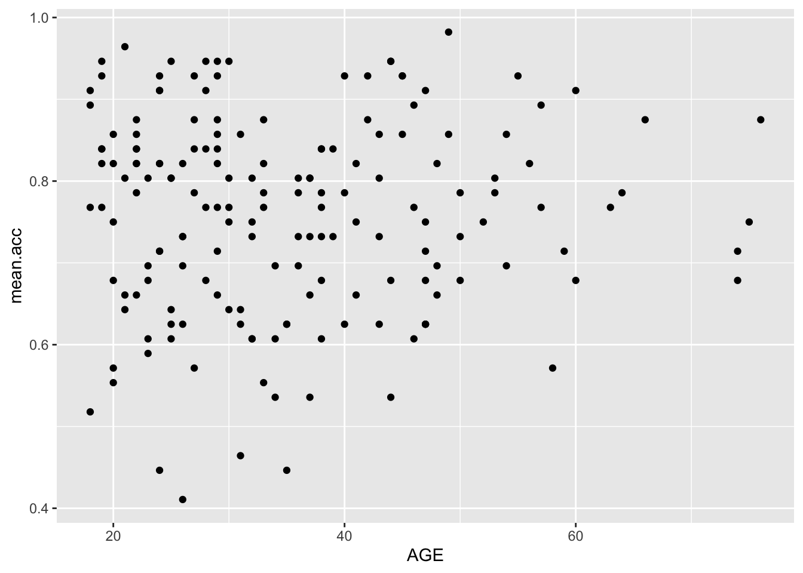
Pract.Q.7. What is the shape (direction) of the association between
SHIPLEYandmean.acc?
Pract.A.7. Increase in
SHIPLEYis associated with increase inmean.acc
Code
ggplot(data = study.two.gen, aes(x = SHIPLEY, y = mean.acc)) +
geom_point()
Pract.Q.8. What is the shape (direction) of the association between
HLVAandmean.acc?
Pract.A.8. Increase in
HLVAis associated with increase inmean.acc
Code
ggplot(data = study.two.gen, aes(x = HLVA, y = mean.acc)) +
geom_point()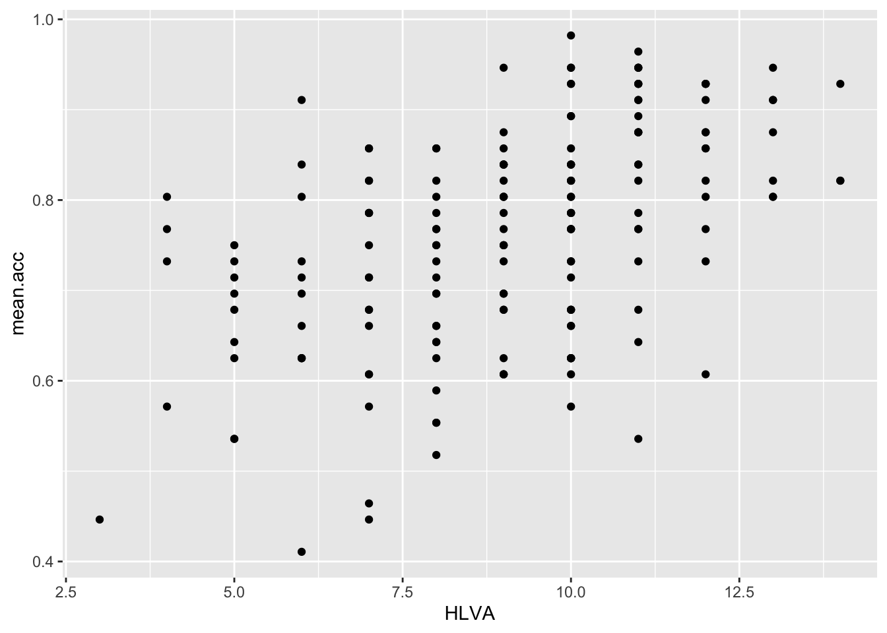
Pract.Q.9. What is the shape (direction) of the association between
FACTOR3andmean.acc?
Pract.A.9. Increase in
FACTOR3is associated with increase inmean.acc
Code
ggplot(data = study.two.gen, aes(x = FACTOR3, y = mean.acc)) +
geom_point()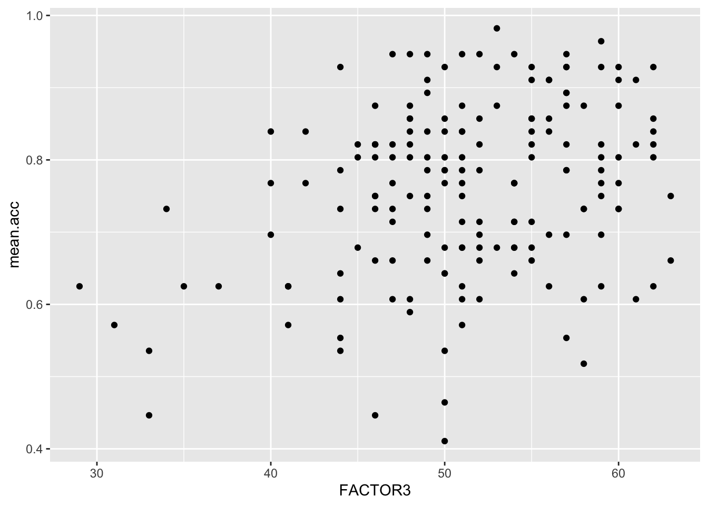
Pract.Q.10. What is the shape (direction) of the association between
QRITOTALandmean.acc?
Pract.A.10. Increase in
QRITOTALis associated with increase inmean.acc
Code
ggplot(data = study.two.gen, aes(x = QRITOTAL, y = mean.acc)) +
geom_point()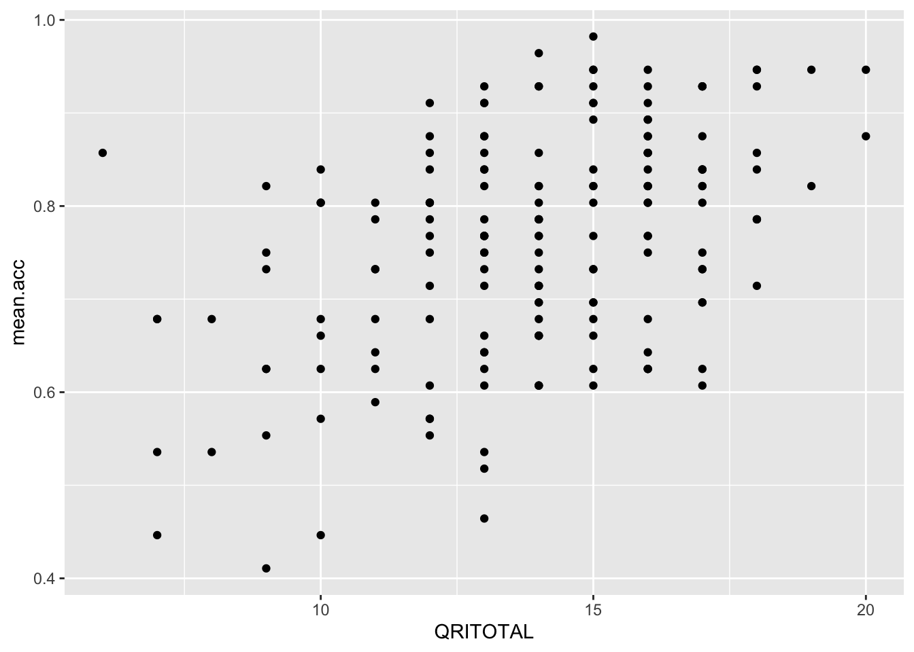
7.4.3.4 Practical Part 4: Learn how to edit plotting code
Practical Task 7 – Edit the appearance of one plot step-by-step
Edit your plotting code to make plots with a professional appearance.
Edit a scatterplot to adjust
- the appearance of the points using
alpha,sizeandcolour; - the colour of the background using
theme_bw(); - the appearance of the labels using
labs().
In the following, we ask you to edit one plot element at a time. You can work out what to do.
Pract.Q.11. Can you edit the appearance of the points in a scatterplot using alpha, size and colour?
Code
ggplot(data = study.two.gen, aes(x = HLVA, y = mean.acc)) +
geom_point(alpha = 0.5, size = 2, colour = "red")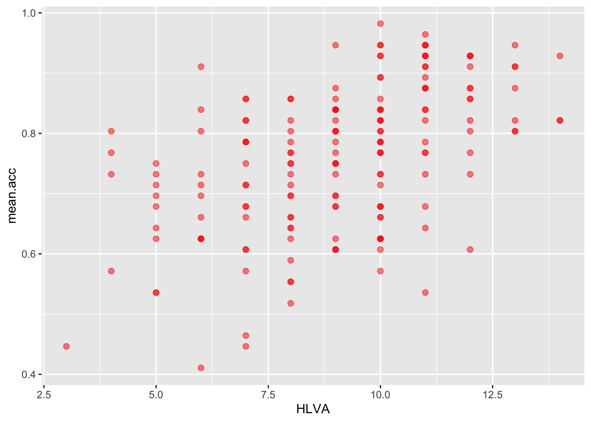
Pract.Q.12. Can you edit the appearance of the plot background?
Code
ggplot(data = study.two.gen, aes(x = HLVA, y = mean.acc)) +
geom_point(alpha = 0.5, size = 2, colour = "red") +
theme_bw()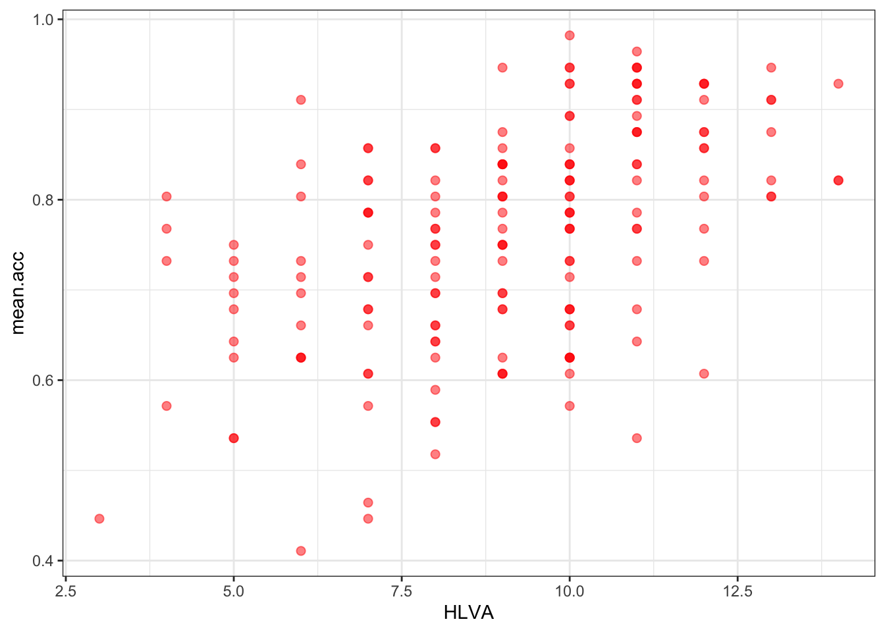
Pract.Q.13. Can you edit the appearance of the labels using
labs()?
Code
ggplot(data = study.two.gen, aes(x = HLVA, y = mean.acc)) +
geom_point(alpha = 0.5, size = 2, colour = "red") +
theme_bw() +
labs(x = "HLVA", y = "mean accuracy")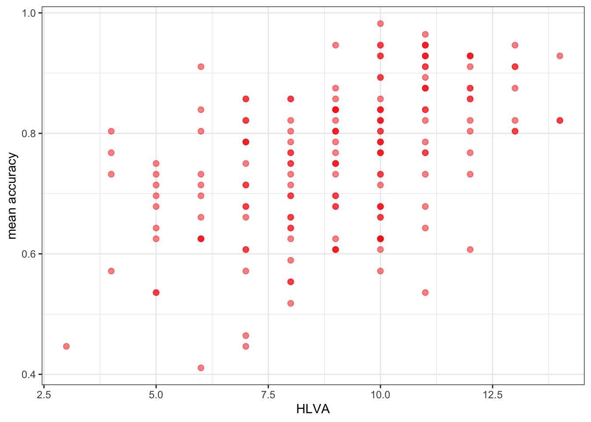
Pract.Q.14. Can you find online information about colour blind palettes?
Try doing a search with the keywords: ggplot colour blind
Pract.A.14. – Here is one:
http://www.cookbook-r.com/Graphs/Colors_(ggplot2)/
Now it’s your turn: experiment!
- What about different colour words? Replace
"red"with"..."? - What about a different size? Replace
size = 2withsize = ...using a different number. - What about a different level of transparency (alpha)? Replace
alpha = 0.5withalpha = ...using a different fraction.
7.4.3.5 Practical Part 5: Use correlation to to answer the research questions
Practical Task 8 – Examine the correlation between mean accuracy (mean.acc) and some numeric predictor variables
Pract.Q.15. What is r (given as
corin the output) for the correlation betweenHLVAandmean.acc?
Can you figure out the code to do the calculation?
Code
cor.test(study.two.gen$HLVA, study.two.gen$mean.acc, method = "pearson", alternative = "two.sided")
Pearson's product-moment correlation
data: study.two.gen$HLVA and study.two.gen$mean.acc
t = 7.5288, df = 170, p-value = 2.866e-12
alternative hypothesis: true correlation is not equal to 0
95 percent confidence interval:
0.3787626 0.6044611
sample estimates:
cor
0.5000559 Pract.A.15. r = 0.5000559
Pract.Q.16. Is the correlation significant?
Pract.A.16. r is significant
Pract.Q.17. What are the values for t and p for the significance test for the correlation?
Pract.A.17. t = 7.5288, p = 2.866e-12
Pract.Q.18. What do you conclude, given the correlation results?
Maybe draw a scatterplot to examine the shape of the association.
Pract.A.18.
HLVAandmean.accare positively correlated suggesting that asHLVAscores increase so also domean.accscores
Pract.Q.19. What is r (given as
corin the output) for the correlation betweenmean.selfandmean.acc?
Pract.A.19. r = 0.5460792
Can you figure out the code to do the calculation?
Code
cor.test(study.two.gen$mean.self, study.two.gen$mean.acc, method = "pearson", alternative = "two.sided")
Pearson's product-moment correlation
data: study.two.gen$mean.self and study.two.gen$mean.acc
t = 8.4991, df = 170, p-value = 9.356e-15
alternative hypothesis: true correlation is not equal to 0
95 percent confidence interval:
0.4317217 0.6431596
sample estimates:
cor
0.5460792 Pract.Q.20. Is the correlation between
AGEandmean.accsignificant?
Pract.A.20. r is not significant
Can you figure out the code to do the calculation?
Code
cor.test(study.two.gen$AGE, study.two.gen$mean.acc, method = "pearson", alternative = "two.sided")
Pearson's product-moment correlation
data: study.two.gen$AGE and study.two.gen$mean.acc
t = 0.30121, df = 170, p-value = 0.7636
alternative hypothesis: true correlation is not equal to 0
95 percent confidence interval:
-0.1269774 0.1721354
sample estimates:
cor
0.02309589 Pract.Q.21. What are the values for t and p for the significance test for the correlation between
QRITOTALandmean.acc?
Pract.A.21. t = 6.4711, p = 9.993e-10
Can you figure out the code to do the calculation?
Code
cor.test(study.two.gen$QRITOTAL, study.two.gen$mean.acc, method = "pearson", alternative = "two.sided")
Pearson's product-moment correlation
data: study.two.gen$QRITOTAL and study.two.gen$mean.acc
t = 6.4711, df = 170, p-value = 9.993e-10
alternative hypothesis: true correlation is not equal to 0
95 percent confidence interval:
0.3159538 0.5571417
sample estimates:
cor
0.44457 Pract.Q.22. What do you conclude, given the correlation results, about the association between
SHIPLEYandmean.acc?
Pract.A.22.
SHIPLEYandmean.accare positively correlated suggesting that as HLVA scores increase so also do mean.acc scores
Code
cor.test(study.two.gen$SHIPLEY, study.two.gen$mean.acc, method = "pearson", alternative = "two.sided")
Pearson's product-moment correlation
data: study.two.gen$SHIPLEY and study.two.gen$mean.acc
t = 6.8493, df = 170, p-value = 1.299e-10
alternative hypothesis: true correlation is not equal to 0
95 percent confidence interval:
0.3390103 0.5746961
sample estimates:
cor
0.4650537 7.4.4 The answers
After the practical class, we will reveal the answers that are currently hidden.
The answers version of the webpage will present my answers for questions, and some extra information where that is helpful.
7.4.5 Look ahead: growing in independence
Important
- Every problem you ever have: someone has had it before, solved it, and written a blog (or tweet or toot) about it.
- R is free open statistical software: everything you use is contributed, discussed and taught by a community of R users online, in open forums.
- Learning to navigate this knowledge is an introduction to the future of knowledge sharing.
7.4.6 Optional exercises: to stretch you
One of the convenient and powerful things about R plotting code is that you can create a series of plots and put them together in a grid of plots for east comparison: we do that here.
We will use the patchwork library: check it out
https://patchwork.data-imaginist.com/articles/patchwork.html
We get the library like this:
library(patchwork)Here’s an example:
First create two plots: give them both names
p.AGE <- ggplot(data = study.two.gen, aes(x = AGE, y = mean.acc)) +
geom_point()
#
p.SHIPLEY <- ggplot(data = study.two.gen, aes(x = SHIPLEY, y = mean.acc)) +
geom_point() Second put the two plots together by calling their names.
p.AGE + p.SHIPLEY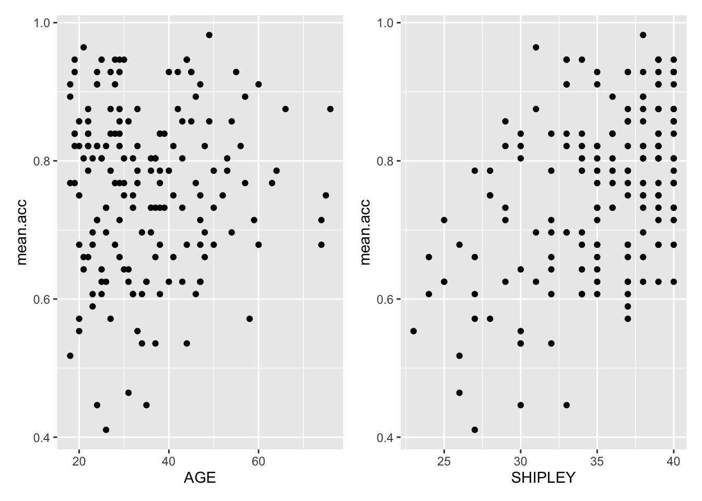
Now you try it:
- Create two plots, using
QRITOTALandSHIPLEYas predictors, andmean.accas the outcome - Then make a grid to present them side by side.
Code
p.QRITOTAL <- ggplot(data = study.two.gen, aes(x = QRITOTAL, y = mean.acc)) +
geom_point()
#
p.SHIPLEY <- ggplot(data = study.two.gen, aes(x = SHIPLEY, y = mean.acc)) +
geom_point()
# -- second put them together
p.QRITOTAL + p.SHIPLEY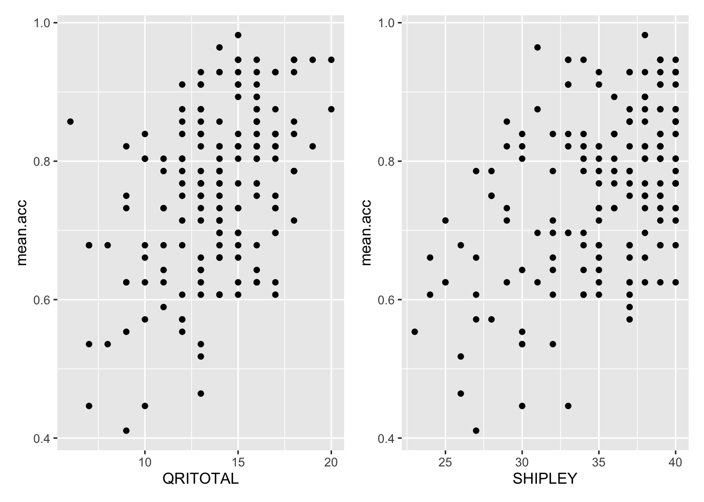